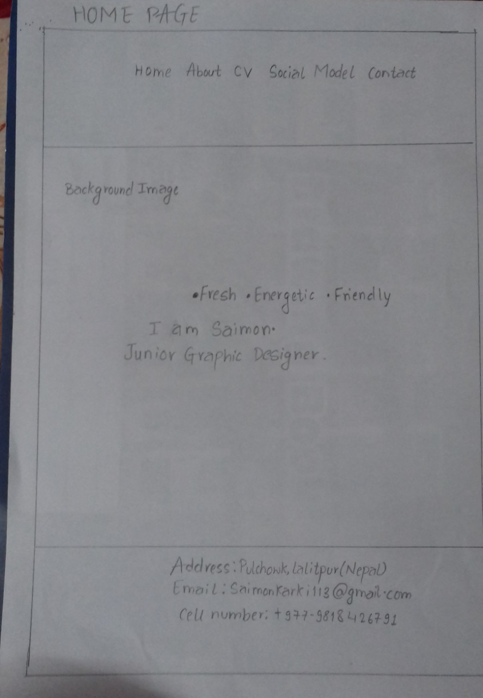
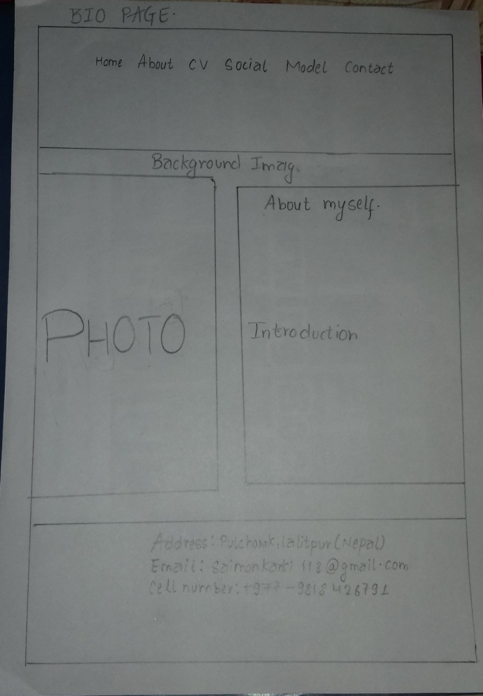
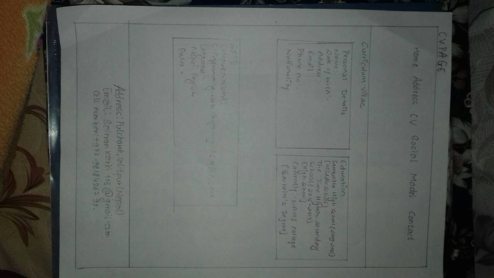
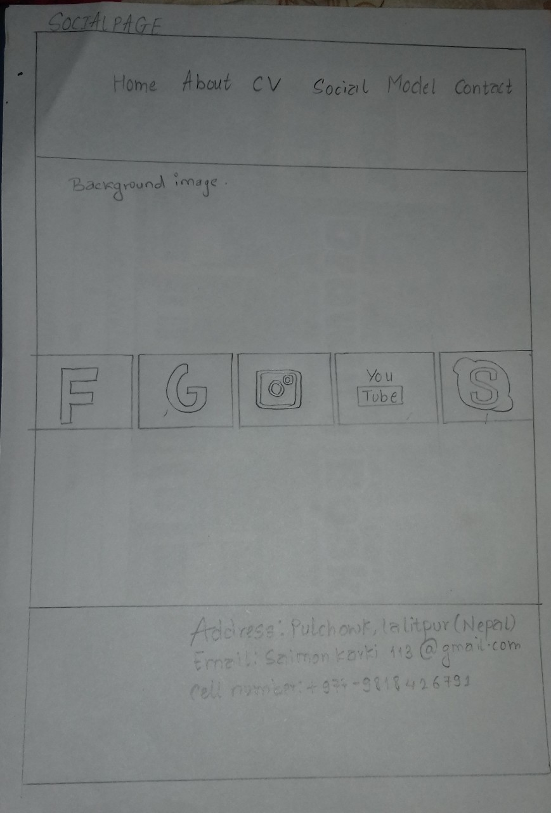
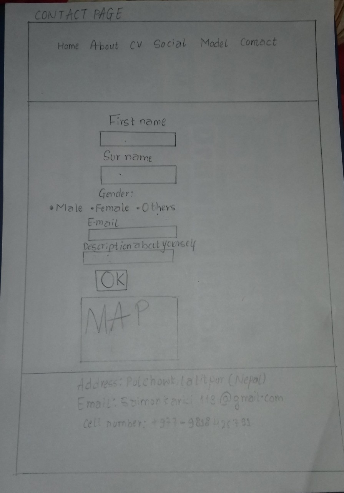
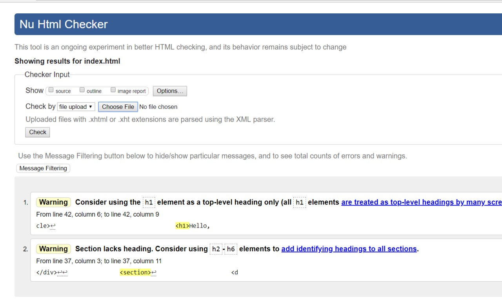
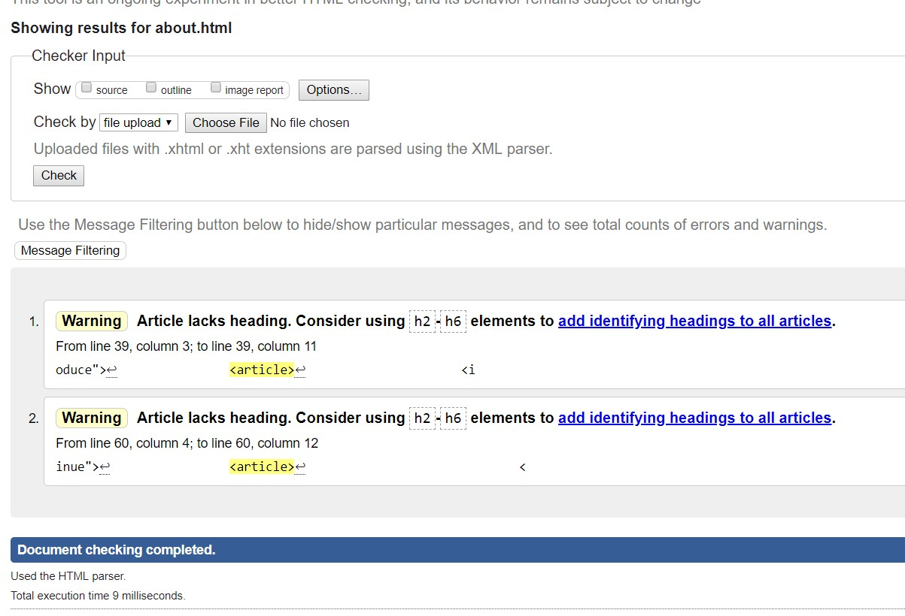
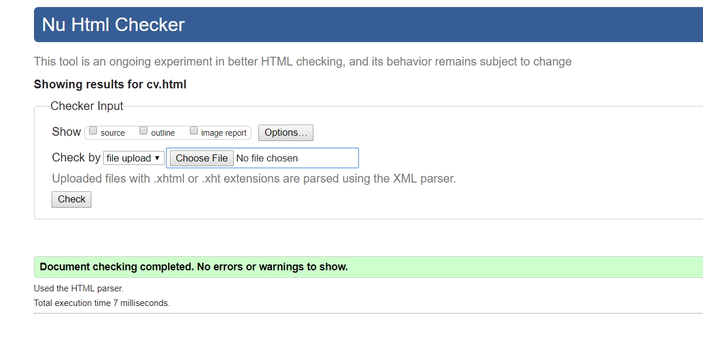
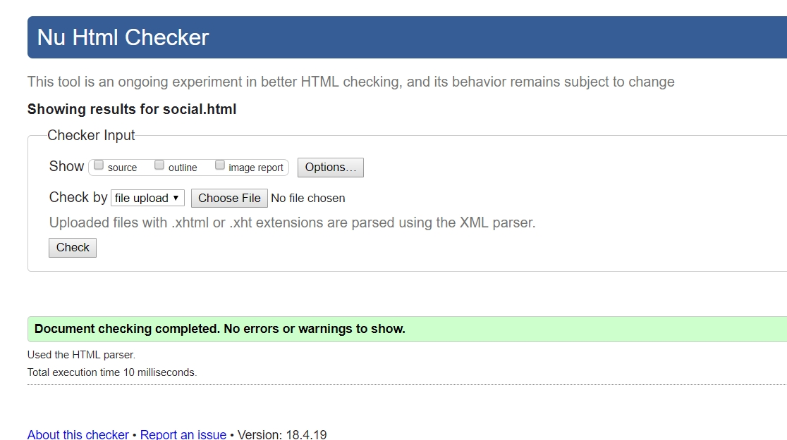
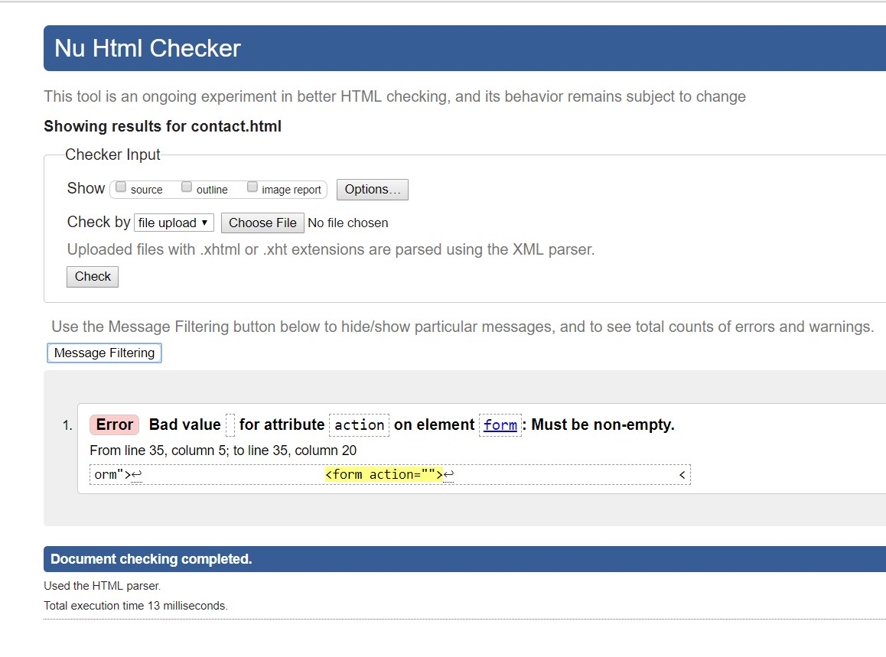

Figure: Home page
This one is the wireframe of home page and it consists of header, footer and body parts. Header part contains navigation bars whrereas footer part contains some information and body parts consists of background image.

Figure: About page
This one is the wireframe of about me page which contains header footer and body. The body part contains some description about me.

Figure: CV page
This is my Cv wireframe and it also contains header footer and body. The body part contains my experiences, academic qualifications and some general informations about me.

Figure: Social Page
This is the wireframe of my social page which contains header, footer and body. It contains the links of my social accounts.

Figure: Contact Page
This is the wireframe of my last page. It contains of a contact form and a google map location of my home address

Fig: Validation of Home Page

Fig: Validation of About Page

Fig: Validation of CV Page

Fig: Validation of CV page

Fig: Validation of ContactPage